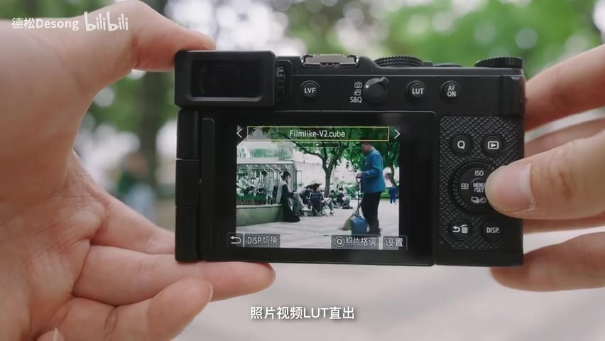
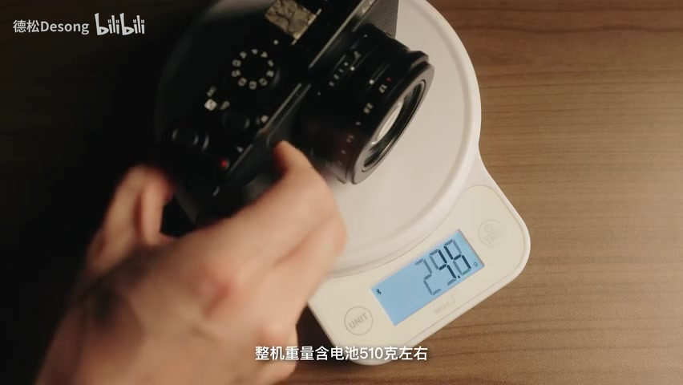
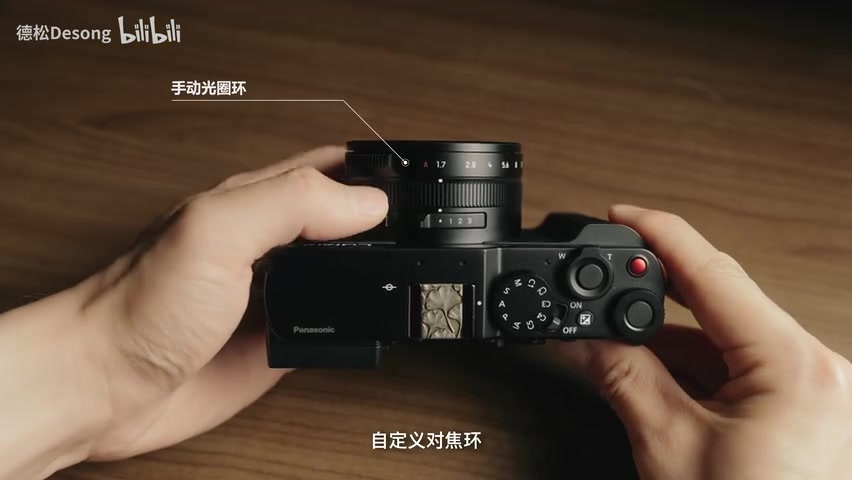
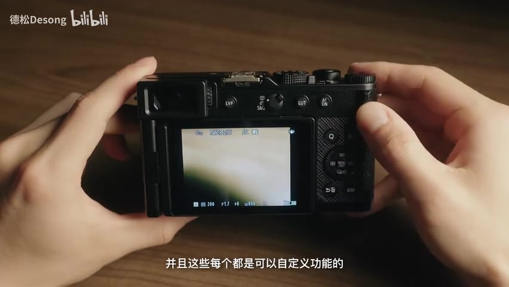
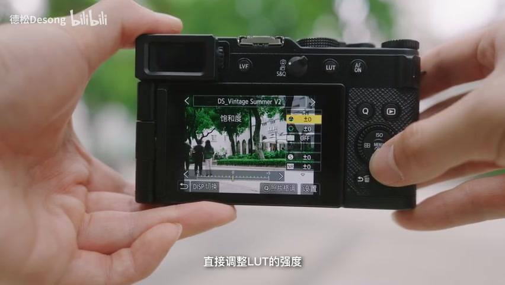
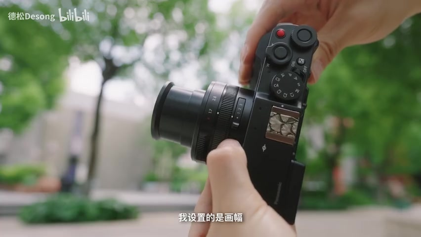
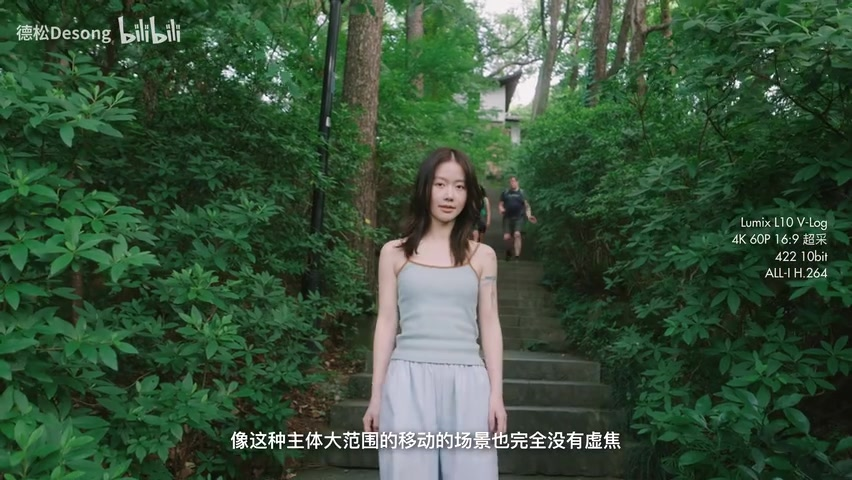
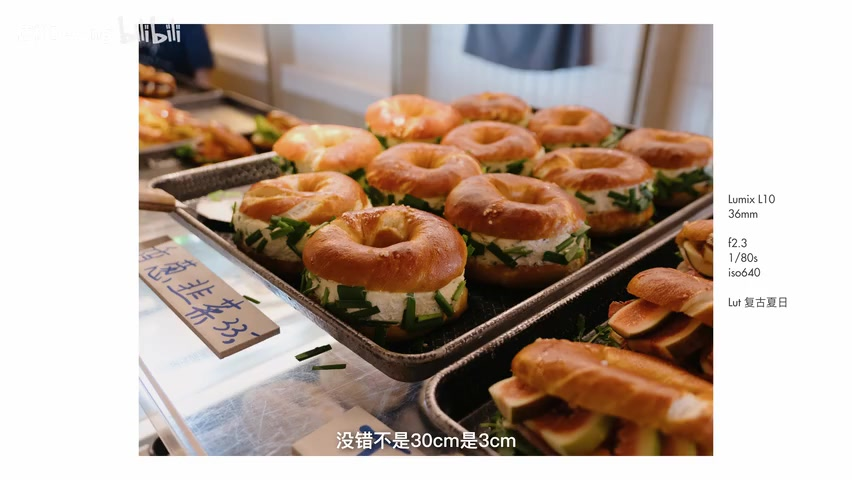

00:00–00:55 · 开场
从“越玩越大”，走到“越玩越小”
视频没有从规格表开场。德松先画出一条他称为“玩机体积曲线”的轨迹：器材越玩越大以后，不少影像爱好者又转向便携与性能的平衡、操控与感官的协调，以及外观和把玩的乐趣。
松下 L10 正是在这个语境里登场。它被介绍为可单手掌握、采用专业操控方式，并支持照片和视频实时 LUT 直出的高端 M43 卡片机。德松把这称作一台帮助人“找回初心”的相机，也提前说明：先聊外观、质感和操控，后半程再看场景和画质。

00:55–02:08 · 机身与镜头
先摸到的是材质、重量和一整套实体控制
近距离上手时，视频依次扫过纹理蒙皮、金属顶盖与底盖，以及后侧面板和取景器区域。称重画面给出的读数约为 510 克（含电池），这让机身有一定压手感，但德松认为仍不会给单手使用造成太大负担。前握把和背部拇指支撑也被反复展示。

可伸缩镜头覆盖视频所称的等效 24–75mm 焦段。镜筒上能看到手动光圈环、自定义环和切换开关；机顶则安排了模式转盘、变焦控制、快门、录制键、曝光补偿控制以及额外的自定义转盘和按钮。德松尤其强调这些控制在小机身上没有被大幅删减。

背部左侧是 OLED 取景器。视频提到其亮度、分辨率和色准，并特意暂停讲解，让观众听机械快门声。声音无法由静态页面还原，感兴趣的读者可回到原视频 01:58 左右收听。
02:12–03:15 · 背面、屏幕与电池
按钮不只多，还要看按下去是什么感觉
视频从取景器开关讲到照片、视频与快门动作切换控制，再配合 C1–C5 自定义档位。实时 LUT、AF 等按钮也可重新分配功能。德松区分了两类触感：单次按下的按钮更清脆，需要持续按住的 AF 按钮则偏软。这些都是规格表很难表达、却会影响日常使用的细节。

侧翻屏被用于视频自拍和竖构图，视频也称屏幕影调准确并支持方向感应。底部是 SD 卡仓和电池仓。续航部分来自德松的个人使用感受：如果只拍照片，一天使用一块电池没有压力；这不是标准化续航测试，也不能直接外推到高规格视频。
03:15–04:16 · 四项操控设计
实时 LUT、整数焦段和画幅切换，把“直出”做成流程
德松最先展示的是实时 LUT 下拉菜单。LUT 强度、对比度、高光阴影和颗粒等项目可以在机内调整并记忆；本期样片也被说明为使用他自己的 LUT 机内直出。接着是与直出搭配的人像美肤功能，不过 Whisper 没有可靠识别出他推荐的准确档位名称。

第三项是把自定义环设为整数焦段切换；拍视频时则可用变焦控制无级推拉。第四项是通过镜头开关切换 4:3、3:2 和 16:9。德松偏爱用 M43 的 4:3 进行竖构图人像和视频拍摄。

04:16–04:55 · 明确的交换
小镜头没有白来：传感器覆盖要做取舍
视频主动回应了一个争议：无论选择哪种画幅比例，都不能用满整块 M43 传感器。德松承认，小型 24–75mm 镜头在覆盖上需要取舍；他的主观感受是边角损失不多，而且画幅快速切换把原本的劣势转成了一种使用选择。
04:55–06:58 · 成像与视频
对焦演示很直观，规格字符串却要谨慎阅读
进入画质部分后，视频谈到背照式 CMOS、V-Log 和新一代处理器，并用移动主体和暗光推进镜头演示多主体识别与相位混合对焦。德松认为，在初代固件下，追焦体验已经看齐松下近期旗舰机；这仍是基于本次样片的个人评价，而不是受控横评。

随后列出的三种常用视频规格包含分辨率、画幅、位深、色度采样和编码方式，但 Whisper 对这串高密度术语识别得很混乱。因此这里不擅自补全数字，只保留视频清楚给出的选择逻辑：
选择第一种高分辨率模式；视频称其使用 H.265。
选择第二种更适合横竖多用或竖构图的模式，同样需考虑 H.265 后期负载。
选择第三种 H.264 模式，在画质与电脑处理压力之间折中。
升格部分还展示了 4K 120 帧与 1080p 240 帧。按旁白，前者保留主体识别和对焦，后者只有单次对焦；视频没有进一步讨论过热、录制时限等边界。
06:58–08:32 · 防抖与镜头
广角能正常走，长焦运镜仍要控制身体
L10 支持镜头防抖，但没有机身防抖。视频用正常跨步而非“猫步”展示广角手持前进，也展示了长焦站定手持。德松的经验是：广角正常走动可以使用，长焦站定也没有明显问题；到了等效 75mm 端要运镜，就需要主动控制呼吸和身体。
镜头部分再次回到小体积和等效 24–75mm 的组合。德松认为它适合多天轻量旅行和每日散步，并肯定锐度、焦外与色散表现，尤其喜欢长焦端的焦外过渡。短板也被点出：广角畸变较明显，逆光眩光光斑偏多；他的处理建议是调整角度避开光斑。
最后是一段贴近物体表面的广角近摄。旁白强调最近对焦距离可到 3 厘米，并用食物样片展示这种贴近拍摄带来的透视感。

08:32–09:14 · 总结
他的答案是：这是一台可以真正融入生活的机器
收尾时，德松把 L10 概括为“性能和参数的下限很高，把玩和体验的上限也很高”。旅行人文扫街、环境人像与生活记录被列为适用场景；“超过 90 分”则是他的个人评分，不应当作标准化测试成绩。
视频还预告了 10 月 LUMIX 25 周年版本，但颜色名称在转录中没有被可靠识别。随后就是常规的关注、点赞、收藏、转发与告别。